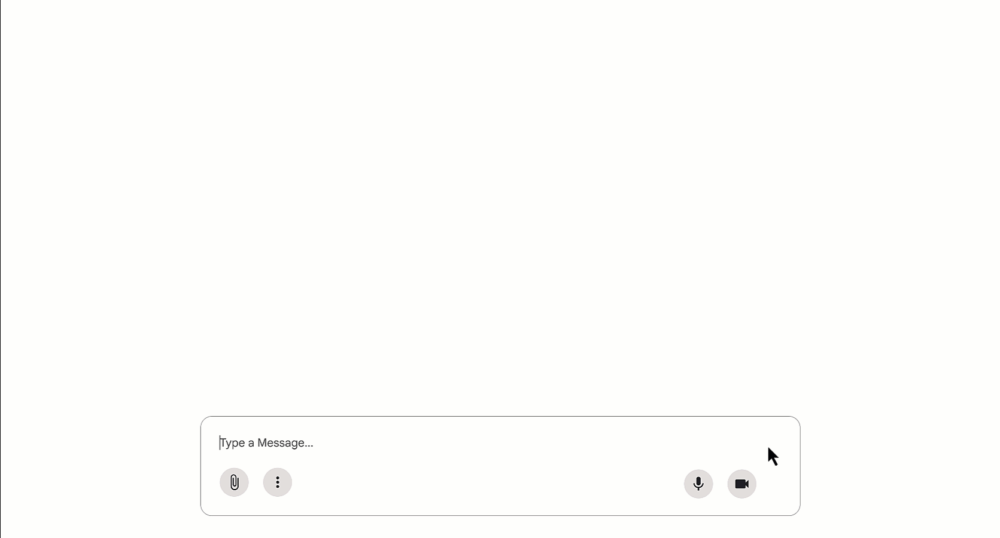
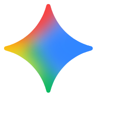
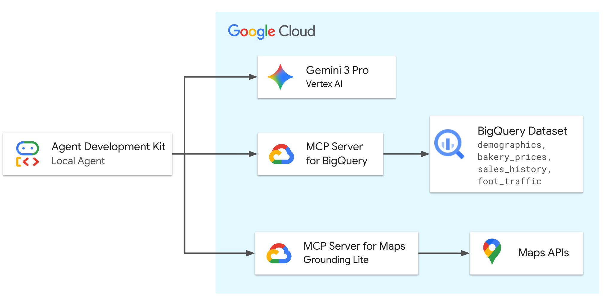
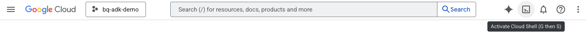
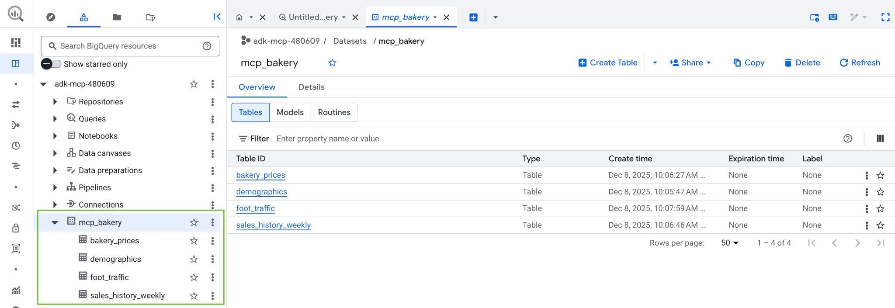
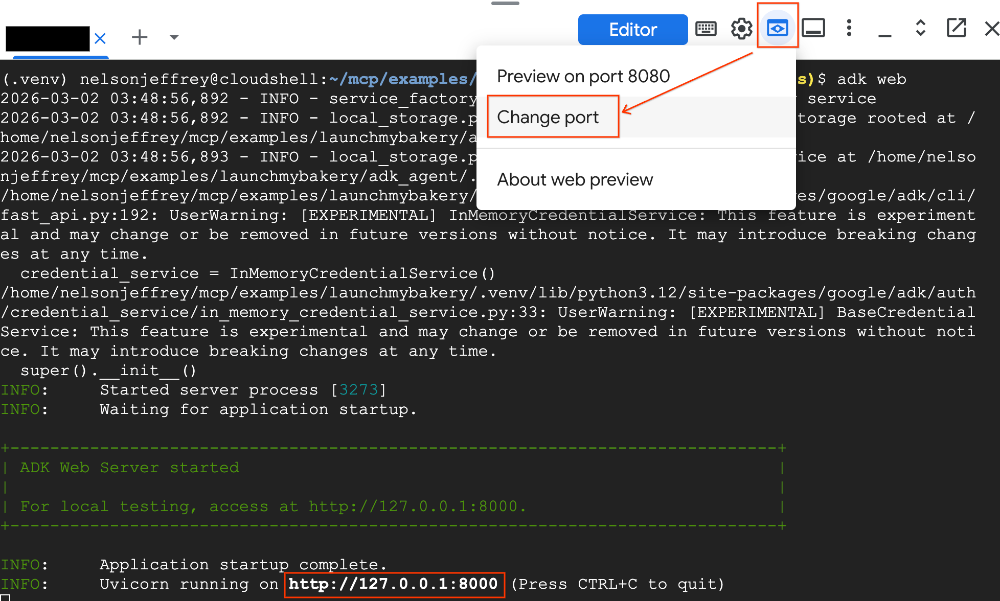
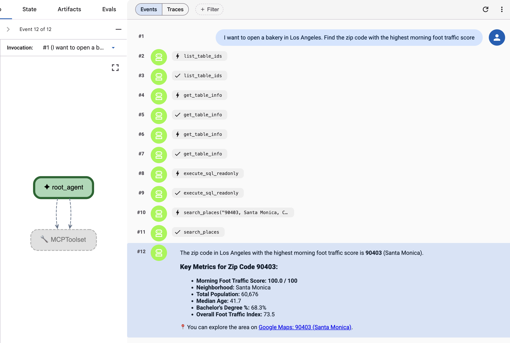
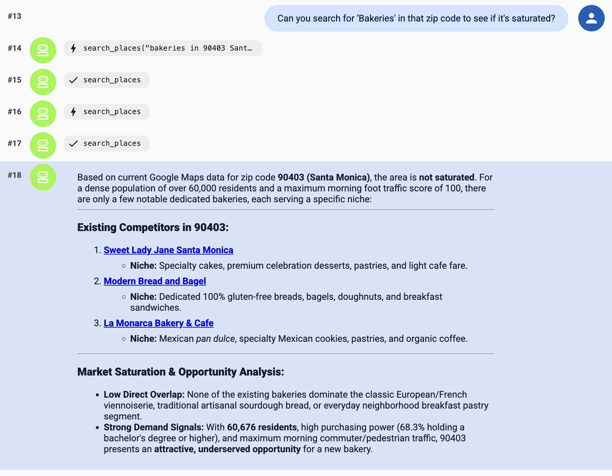

Build a Location Intelligence
ADK Agent with MCP servers
for BigQuery and Google Maps
Hands-On Workshop • Ground a Gemini agent in enterprise data and the real world
💳 Redeem Your Free Cloud Credits
Point your phone camera at the code → redeem → create or pick a project with billing enabled. BigQuery and Maps Grounding Lite are pay-as-you-go; today's lab fits inside these credits many times over.
LATWDevs2026!This is what you'll have running in about 40 minutes
One Gemini agent • Two managed MCP servers • Zero hand-written API clients

Live demo: an ADK agent chains BigQuery SQL with Google Maps lookups (source: Google Cloud announcement, Dec 10 2025).
Workshop Hub — scan these now
Everything you need is one QR away; the codelab has all commands and prompts
1. The Codelab (follow along)
codelabs.developers.google.com/adk-mcp-bigquery-mapsFull step-by-step lab: setup scripts, agent code, and every prompt we will run today.
2. Free Credits (redeem first!)
g.dev/credits/latw-bigquery-100Maps Grounding Lite and BigQuery need billing enabled. Redeem your event credit code, then create a project.
3. Slides & Speaker Runbook
github.com/rabimba/GDE-ML-ArtifactsThis deck, the verbatim facilitator script, and the copy-paste prompt sheet.


Rabimba
Karanjai
Google Developer Expert — AI & ML
ML Scientist — PayPal
Start your engines — setup runs while I talk
Open Cloud Shell
console.cloud.google.com → Activate Cloud Shell (top bar)
Clone the demo repo
git clone https://github.com/google/mcp.git
Run setup_env.sh
cd mcp/examples/launchmybakery && ./setup/setup_env.sh
Run setup_bigquery.sh
./setup/setup_bigquery.sh
Provision in the background
The two setup scripts take ~3-5 min. Kick them off now, then look up — I'll explain what everything is while your project provisions itself.
# Verify auth + project
gcloud auth list
export PROJECT_ID=$(gcloud config get project)
# Get the code
git clone https://github.com/google/mcp.git
cd mcp/examples/launchmybakery
# Kick off BOTH setup scripts
./setup/setup_env.sh
./setup/setup_bigquery.shYour friend is opening a sourdough
bakery in Los Angeles. Where?
- A) Walk around and 'get a feel' for neighborhoods Click to Vote
- B) Hire a market-research firm ($$$, weeks) Click to Vote
- C) Ask an LLM chatbot for the 'best' zip code Click to Vote
- D) Combine real foot-traffic data with live Maps info Click to Vote
Two data worlds, one question
Enterprise Data — BigQuery
- Demographics & foot-traffic index by zip
- Competitor product pricing
- Weekly sales history per store
- Your private, governed numbers
The Real World — Google Maps
- Which bakeries actually exist nearby?
- Drive time to the supplier
- Weather for opening weekend
- Fresh, public, geospatial truth
What makes an LLM an Agent?
Build the definition up piece by piece — press → to reveal each part

1. MODEL
Gemini 3.5 Flash — the reasoning brain. Alone, it only predicts text.
2. + INSTRUCTIONS
A system prompt that defines the goal, persona, and rules of the game.
3. + TOOLS
Functions the model may call to act on the world — query BigQuery, search Maps.
4. + LOOP
Reason → pick a tool → act → observe result → reason again, until the goal is met.
The three pillars we'll use today
Gemini 3.5 Flash
(on Vertex AI)
The reasoning model. Our .env sets GOOGLE_GENAI_USE_VERTEXAI=1, so ADK calls it through your project's Vertex AI endpoint.
ADK
Agent Development Kit
Google's open-source framework for building agents: LlmAgent, tool wiring, sessions, and a built-in web UI for debugging.
MCP
Model Context Protocol
The open standard (started by Anthropic) that lets any agent discover and call tools on any server — one protocol instead of N custom integrations.
An ADK agent in ~15 lines
adk_agent/mcp_bakery_app/agent.py — the entire agent definition
root_agent = LlmAgent(
model='gemini-3.5-flash',
name='root_agent',
instruction=f"""
Help the user answer questions by strategically
combining insights from two sources:
1. **BigQuery toolset:** Access demographic (inc.
foot traffic index), product pricing, and
historical sales data in the mcp_bakery
dataset. Do not use any other dataset.
Run all query jobs from project id: {PROJECT_ID}.
2. **Maps Toolset:** Use this for real-world
location analysis, finding competition/places
and calculating necessary travel routes.
Include a hyperlink to an interactive map in
your response where appropriate.
""",
tools=[maps_toolset, bigquery_toolset]
)The three control surfaces:
model— Which Gemini does the thinkinginstruction— The agent's job description — notice it scopes the data AND names the projecttools— Two MCP toolsets = every tool from both servers
MCP: from N×M integrations to N+M
The 'USB-C for AI' — Anthropic's open standard, adopted across the industry
✕ ✕ ✕
MCP anatomy: Host, Client, Server
And the transport that carries it — today that's Streamable HTTP
HOST
ADK's web UI — the app the user chats with.
CLIENT
An MCP client inside the host keeps a dedicated connection per server.
SERVER
BigQuery & Maps servers expose a catalog of named, typed tools.
TRANSPORT
Stdio for local servers; Streamable HTTP for remote, Google-hosted ones — what we use today.
Google's managed, remote MCP servers
Announced Dec 10, 2025 — Google's API infrastructure now speaks MCP
No local servers to install, patch, or secure. You point your client at a globally-consistent endpoint.
- BigQuery: https://bigquery.googleapis.com/mcp
- Google Maps (Grounding Lite): https://mapstools.googleapis.com/mcp
- Also live: GCE & GKE today — rolling out next: Spanner, AlloyDB, Cloud Run, Developer Knowledge...
- Enable per project: gcloud beta services mcp enable <service> (setup_env.sh did this)
- Governance: IAM (roles/mcp.toolUser), audit logging, Model Armor for prompt-injection defense
BigQuery MCP server — the 6 tools
The agent discovers these itself; column descriptions become its documentation
list_dataset_idsWhat datasets exist in this project?list_table_idsWhat tables are in mcp_bakery?get_dataset_infoMetadata about a datasetget_table_infoSchema + column descriptions for a tableexecute_sqlRun any SQL — including AI.FORECASTexecute_sql_readonlySame, but mutations blocked by designMaps Grounding Lite — the 5 tools
Trusted geospatial grounding with required Google Maps attribution
search_placesFind places + AI summaries + Maps linkscompute_routesDistance & duration between two pointslookup_weatherCurrent conditions & forecastsresolve_namesFree-text address/place -> Place IDresolve_maps_urlsGoogle Maps URL -> Place IDTwo servers, two auth patterns — tools.py
Same MCPToolset, different credentials
Both toolsets use StreamableHTTPConnectionParams; only the header differs.
- Maps: Simple API key in the X-Goog-Api-Key header (restricted to mapstools.googleapis.com).
- BigQuery: OAuth 2.0 bearer token from your Application Default Credentials + x-goog-user-project for billing.
- ⚠️ Token lifetime: ADC tokens expire ~60 min and ADK does not auto-refresh — re-run gcloud auth application-default login if a long session dies.
# --- Maps: API key header ---
MCPToolset(
connection_params=StreamableHTTPConnectionParams(
url="https://mapstools.googleapis.com/mcp",
headers={"X-Goog-Api-Key": maps_api_key},
timeout=30.0, sse_read_timeout=300.0))
# --- BigQuery: OAuth bearer from ADC ---
credentials, project_id = google.auth.default(
scopes=["https://www.googleapis.com/auth/bigquery"])
credentials.refresh(
google.auth.transport.requests.Request())
HEADERS_WITH_OAUTH = {
"Authorization": f"Bearer {credentials.token}",
"x-goog-user-project": project_id}
MCPToolset(
connection_params=StreamableHTTPConnectionParams(
url="https://bigquery.googleapis.com/mcp",
headers=HEADERS_WITH_OAUTH,
timeout=30.0, sse_read_timeout=300.0))The reasoning journey: macro → micro → money
Watch how one conversation walks down the decision funnel, switching tools
The full architecture
Everything on one slide — this is your 'you are here' map for the lab
Trace one request end to end:
- 1. User: asks in the ADK web UI (adk web)
- 2. Agent (Gemini 3.5 Flash): reasons on Vertex AI, picks a tool
- 3. MCP toolset: sends a signed Streamable HTTP call
- 4a. BigQuery MCP: interprets schema & runs SQL in place — data never leaves BigQuery
- 4b. Maps MCP: grounds in live places, routes, weather
- 5. Agent: combines both into one grounded business answer

🔍 Click diagram to enlarge full-screenConcept Check
Click to reveal each answer
- Q1: Agent needs today's weather at the site?
- Q2: Agent must forecast December revenue?
- Q3: Agent must list tables before writing SQL?
Why not just…?
Common objections
- Paste CSVs into the prompt?: 40k+ rows won't fit, goes stale, and leaves governance.
- Call Maps with curl?: You'd hand-write auth, parsing & schemas — MCP already did it.
- Fine-tune on my data?: Teaches style, not fresh facts. Tools > training for live data.
Taking this to production — the guardrails that matter
The demo uses your personal credentials for speed. Before this pattern ships, layer on:
- • Least privilege: grant only roles/mcp.toolUser + bigquery.jobUser + bigquery.dataViewer; nothing broader
- • Separate agent identity: run the agent as its own service account so tool calls are attributable & revocable
- • Prefer read-only SQL: use execute_sql_readonly, or an IAM deny policy on execute_sql, so the agent can't mutate
- • Restrict the Maps key: scope it to mapstools.googleapis.com only (setup_env.sh already did)
- • Defend the prompt: Model Armor screens tool output for indirect prompt injection
- • Watch the logs: every MCP tool call lands in Cloud Audit Logs — alert on anomalies
Let's build this!
Step 1: Project, auth & the code
If you did the 'engines' step, just verify — else run it now
Confirm you're authenticated and the repo is cloned.
- gcloud auth list: must show your account as ACTIVE
- export PROJECT_ID=$(gcloud config get project): every later script reads this
- gcloud auth application-default login: creates the ADC the BigQuery MCP toolset needs
- ⚠️ Billing: Maps Grounding Lite & BigQuery both require billing — redeem your credit first
gcloud auth list
gcloud config get project
export PROJECT_ID=$(gcloud config get project)
git clone https://github.com/google/mcp.git
cd mcp/examples/launchmybakery
# Required so ADK can call BigQuery via MCP
gcloud auth application-default login
🔍 Click screenshot to zoomWhat those two setup scripts just did
Press → to walk through the provisioning you kicked off at minute 5
setup_env.sh • 1
Enables APIs: aiplatform, apikeys, mapstools, bigquery — plus the MCP endpoints (gcloud beta services mcp enable).
setup_env.sh • 2
Creates a Maps API key restricted to mapstools.googleapis.com and writes .env (VERTEXAI flag, project, key).
setup_bigquery.sh • 1
Creates a Cloud Storage bucket and uploads the 4 CSVs (demographics, prices, sales, foot traffic).
setup_bigquery.sh • 2
Creates dataset mcp_bakery and 4 tables — each column carrying a description the agent will read.
✋ Checkpoint 1: Your data is live
- Open: the BigQuery console in your project
- Confirm: dataset mcp_bakery exists with 4 tables
- Peek: at foot_traffic → rows where time_of_day='morning' carry a foot_traffic_score
- Stuck?: re-run ./setup/setup_bigquery.sh; check PROJECT_ID is set

BigQuery console: mcp_bakery dataset with its 4 tables (Click to zoom)
Step 2: Install ADK in a virtualenv
google-adk[mcp] — the [mcp] extra brings the MCP client
Isolate the install, then install ADK with MCP support.
- python3 -m venv .venv: keep Cloud Shell's system Python clean
- pip install "google-adk[mcp]": the extra pulls in the MCP client libraries
- Trouble?: the repo pins a known-good: pip install google-adk==1.28.0
- Then: cd adk_agent/ — adk web discovers apps under the CWD
python3 -m venv .venv
source .venv/bin/activate
# The [mcp] extra = MCP client support
pip install "google-adk[mcp]"
# adk web scans the current dir for agents
cd adk_agent/Step 3: Read the agent you'll run
- Open Editor: in Cloud Shell, browse mcp/examples/launchmybakery
- agent.py: find the LlmAgent — model, instruction, tools
- tools.py: find the two MCPToolset calls & their headers
- .env: confirm GOOGLE_GENAI_USE_VERTEXAI=1 and MAPS_API_KEY are set
Cloud Shell Editor showing the launchmybakery layout (Click to zoom)
Step 4: Launch the agent UI
adk web + Cloud Shell Web Preview on port 8000
Start the dev server, then open it through Web Preview.
- --allow_origins: required in Cloud Shell so the IDE proxy origin is accepted
- Web Preview: top-right of Cloud Shell → Change port → 8000 → Change and Preview
- Pick the app: select mcp_bakery_app in the UI's dropdown
- Empty dropdown?: you ran adk web from the wrong directory — cd adk_agent/ first
adk web --allow_origins \
'regex:https://.*\.cloudshell\.dev'
# Then in Cloud Shell:
# Web Preview (top right)
# → Change port → 8000
# → Change and Preview
🔍 Click screenshot to zoom✋ Checkpoint 2: First tool call (macro)
- Ask: "I want to open a bakery in Los Angeles. Find the zip code with the highest morning foot traffic score."
- Watch the trace: agent calls get_table_info, then execute_sql on foot_traffic
- Expect: zip 90403 (Santa Monica) surfaces to the top
- Auth error?: re-run gcloud auth application-default login (60-min token)

ADK web: execute_sql finds the top morning-traffic zip (Click to zoom)
✋ Checkpoint 3: Validate on the ground (micro)
- Follow up: "Can you search for 'Bakeries' in that zip code to see if it's saturated?"
- Notice: no zip in your prompt — the agent carried 90403 from memory
- Watch: the trace switch servers: Maps search_places
- Click: the Google Maps link in the answer — that's the required attribution

ADK web: Maps search_places scans 90403 for bakeries (Click to zoom)
Your turn: run the rest of the journey
Three more prompts — predict the tool before you run each (answers in the codelab)
⚡ Finished early? Break it (productively)
Tweak the instruction
The cheapest way to change behavior
# agent.py — edit the instruction, e.g.:
"Position the brand as budget-friendly
and always cite the source table."
# save → adk web reloads → re-ask Q3- Watch: the price recommendation shift with one sentence
- Try: a persona: 'You are a skeptical CFO'
Stretch the tools
Push past the script
# Ask about the weather on opening day
"Weather in 90403 this Saturday?"
→ Maps lookup_weather
# Safety: force read-only SQL
# MCPToolset(tool_filter=['execute_sql_readonly'])
# or an IAM deny on execute_sql- Weather: a 3rd tool you never configured — it was just there
- Read-only: one change removes the agent's ability to mutate data
Quick fixes — the 6 ways today breaks
Hit a wall? It's almost certainly one of these:
- • Auth errors mid-lab: ADC token expired (~60 min) → gcloud auth application-default login
- • 'API not enabled' / 403: MCP endpoint off → gcloud beta services mcp enable bigquery.googleapis.com && gcloud beta services mcp enable mapstools.googleapis.com
- • Empty app dropdown: adk web run from wrong dir → cd mcp/examples/launchmybakery/adk_agent
- • Web Preview refuses: missing --allow_origins 'regex:https://.*\.cloudshell\.dev'
- • Maps calls fail: key missing/restricted wrong → check .env MAPS_API_KEY, target service mapstools.googleapis.com
- • Billing errors: project has no billing → redeem the event credit and re-attach
Clean up — don't donate your credits back
One script deletes the dataset, bucket, and API key
Stop the server (Ctrl+C), then run cleanup from the repo root.
- Deletes: BigQuery dataset mcp_bakery + the GCS bucket
- Revokes: the restricted Maps API key created at setup
- Keeps: your project — so you can re-run ./setup scripts any time
- Why it matters: BigQuery storage & Maps calls are pay-as-you-go
# Ctrl+C to stop adk web, then:
cd ~/mcp/examples/launchmybakery
chmod +x cleanup/cleanup_env.sh
./cleanup/cleanup_env.sh
# Deletes: mcp_bakery dataset,
# the staging bucket, and the API key.Your Location-Intelligence Agent playbook
The four ideas to take with you
Everything today reduces to four moves you can reuse for any agent + any data.
Ground,
don't guess
An LLM alone hallucinates business facts. Ground it in your warehouse and live Maps data.
One agent,
many tools
A single ADK LlmAgent + MCP toolsets reasons across BigQuery AND Maps — no glue code.
Schema is
the prompt
get_table_info feeds column descriptions to the model. Documented data = smarter agent.
Govern by
default
Managed MCP servers bring IAM, audit logs, read-only SQL, and Model Armor. Ship with guardrails.
Where to take this next
Deploy the agent
Move off adk web: containerize and ship to Cloud Run or Agent Engine, with a service-account identity.
More MCP servers
Live now: GCE & GKE. Rolling out: Spanner, AlloyDB, Cloud Run, Developer Knowledge — full list: google/mcp on GitHub.
Your own data
Point the agent at YOUR dataset: write rich column descriptions, scope the instruction, start with execute_sql_readonly.
Build a Location Intelligence
ADK Agent with MCP servers
for BigQuery and Google Maps
You built it: one grounded agent over your data and the real world
Thank you!
Questions & live troubleshooting.
The codelab stays free — take it, fork it, teach it.
Slides & Runbook
GDE-ML-Artifacts
Cheat sheet — every command from today
Setup
Run once per project
export PROJECT_ID=$(gcloud config get project)
git clone https://github.com/google/mcp.git
cd mcp/examples/launchmybakery
gcloud auth application-default login
./setup/setup_env.sh
./setup/setup_bigquery.sh- MCP endpoints: gcloud beta services mcp enable <svc>
- Billing: required for BigQuery + Maps
Run & clean up
Each session
python3 -m venv .venv && source .venv/bin/activate
pip install "google-adk[mcp]"
cd adk_agent/
adk web --allow_origins \
'regex:https://.*\.cloudshell\.dev'
# later, from the repo root:
cd ~/mcp/examples/launchmybakery
chmod +x cleanup/cleanup_env.sh
./cleanup/cleanup_env.sh- Token: re-login after ~60 min
- Read-only: prefer execute_sql_readonly in prod